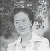

1980
1980 1 jan. Årets motto är "Hemkyrkan (Home church) är basen för Himmelriket."
The Way Of God's Will publiceras.
Någon gång på 80-talet översattes några av dom heliga sångerna från engelska till svenska-länk.
80-talet Peter Koch, nationsledare i Österrike; började sända ut underjordiska missionärer till Sovjetstater -
Mission Butterfly
(fjäril)
redan 1968 kom första missionärer till Tjeckoslovakien
maj Världen: Gwangju demokratiseringsrörelsen syftar på ett folkligt uppror i staden Gwangju, SydKorea från 18 maj-27 maj, 1980.
Under denna period ökade medborgarnas uppror mot Chun Doo-hwans militära diktatur och tog kontroll över staden. Under upprorets gång använde medborgarna vapen för att försvara sig, men blev till sist krossade av den SydKoreanska armén. Evenemanget kallas ibland 5-18, med hänvisning till det datum som upproret började.
Under Chun Doo-hwans regeringstid kallades det ett uppror inspirerat av kommunistiska sympatisörer. Men efter det att den civila regeringen återupptogs, fick incidenten erkännande som ett försök att försvara demokratin från militär ockupation.
är 1997 dömdes tidigare presidenter Chun Doo-Hwan och Roh Tae-woo, liksom 17 andra och benådades senare, för sina "förbindelser med kuppen den 12 december 1979, Gwangju-upproret och slaskfonderna".
jun. Prof. Young Oon Kim ger ut
Unification Theology (röda boken)


sommar 40 dagars världs-pioneering.
Jönköping besöks med Princip-lektioner på torget!
Chung Hwan Kwak ger ut boken Outline of the Principle - Level 4, "Gröna boken".
. CAUSA grundas
. Noticias Del Mundo
. Månadstidskriften Todays World startas 1980
Divine Principle Level 4 publiceras.
Citat: "Under åren före Ron (Ronald Reagen) valdes till president (1980), såg jag ofta en andlig sida av
honom.
Till exempel, minns jag en gång när jag gav en liten middag på Beverly Hilton Hotell och bjöd in honom.
Han tog då upp frågan om Kristi återkomst. Samma fråga tog han upp igen vid andra tillfällen." /Från Billy Grahams biografi - Just as I am.